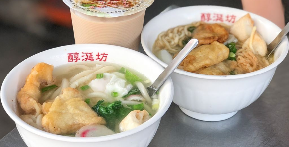
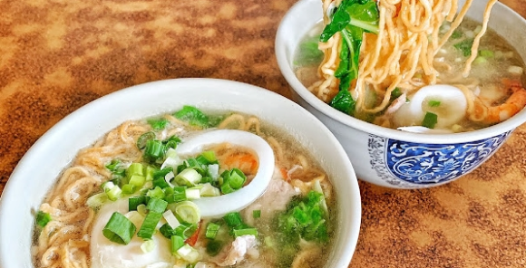

麵類

公 休 日：X
電 話：(06)221-5033
地 址：700台南市中西區保安路53號
醇涎坊
營業時間：06:00-21:00公 休 日：X
電 話：(06)221-5033
地 址：700台南市中西區保安路53號
古早味鍋燒意麵，便宜又大碗的銅板美食！
👉鍋燒意麵/烏龍麵/細絲/冬粉/米粉 小的$55大的65 加炸料再加25
有嚼勁的意麵吸飽了鮮甜的湯底，
加上小巧的魚板，蛋包跟青蔥，
以及兩片甜不辣（魚肉裹粉拿去炸），大大滿足！
👉鍋燒意麵/烏龍麵/細絲/冬粉/米粉 小的$55大的65 加炸料再加25
有嚼勁的意麵吸飽了鮮甜的湯底，
加上小巧的魚板，蛋包跟青蔥，
以及兩片甜不辣（魚肉裹粉拿去炸），大大滿足！
偏甜的湯頭第一次吃到會不習慣，卻是越吃越上癮，
店內屬於半開放座位，座位數量也不多，
要內用建議平日去，外帶回家也很好吃！
店內屬於半開放座位，座位數量也不多，
要內用建議平日去，外帶回家也很好吃！

公 休 日：週一
電 話：(06)226-2076
地 址：708台南市安平區安平路65號
安平路65號鍋燒意麵
營業時間：10:00-20:00公 休 日：週一
電 話：(06)226-2076
地 址：708台南市安平區安平路65號
👉鍋燒意麵$60
湯頭很鮮甜，是古早味的柴魚湯，
配料有豬肉片、新鮮的剝好殼的蝦、還有一大圈的小卷、
再加上鮮甜蛤蜊、半熟蛋，簡單就是美味~
另外還有賣關東煮黑輪米血，也是很多人必買的夯品
湯頭很鮮甜，是古早味的柴魚湯，
配料有豬肉片、新鮮的剝好殼的蝦、還有一大圈的小卷、
再加上鮮甜蛤蜊、半熟蛋，簡單就是美味~
另外還有賣關東煮黑輪米血，也是很多人必買的夯品
很有古早味的店家，沒有店名、招牌，很容易路過🤣
跟繽紛熱鬧的安平老街比起來，更多了一些樸實無華的溫馨感~
在這間店吃飯就像是回到老家一樣自適
跟繽紛熱鬧的安平老街比起來，更多了一些樸實無華的溫馨感~
在這間店吃飯就像是回到老家一樣自適
萬紅刀切麵
營業時間：11:00-20:40公 休 日：X
電 話：(06)200-3848
地 址：704台南市北區開元路380號
👉刀切炒麵$65
店家純手工無添加的麵條很有嚼勁，有微弱沙茶調味，肉絲軟而不柴
👉牛肉捲餅$60
厚實有彈性的餅皮，夾著嫩嫩的牛肉條、清爽酸菜，大口咬下抓餅麵香充斥口中～
店家純手工無添加的麵條很有嚼勁，有微弱沙茶調味，肉絲軟而不柴
👉牛肉捲餅$60
厚實有彈性的餅皮，夾著嫩嫩的牛肉條、清爽酸菜，大口咬下抓餅麵香充斥口中～
萬紅的牛肉麵也是一個不錯的選擇，另外還有豐富小菜可以自取，
內用也有免費的飲料（大多是豆漿跟紅茶）
是一家擁有多項美味麵食，天天吃既不會傷荷包也不會膩的麵館！
內用也有免費的飲料（大多是豆漿跟紅茶）
是一家擁有多項美味麵食，天天吃既不會傷荷包也不會膩的麵館！
南門牛肉麵
營業時間：11:00-14:00 / 17:00-20:00公 休 日：週二
電 話：(06)214-3722
地 址：700台南市中西區南門路44巷3號
南門的牛肉太厚太嫩了吧🤤
他的肉有一半的筋欸賺❤️
湯頭偏淡，但加酸菜吃剛剛好
湯頭大概還是乖乖贏，肉乖乖整個輸慘
這裡的麵雖然很細，可是他煮的不會很爛！口感我喜歡～
他的肉有一半的筋欸賺❤️
湯頭偏淡，但加酸菜吃剛剛好
湯頭大概還是乖乖贏，肉乖乖整個輸慘
這裡的麵雖然很細，可是他煮的不會很爛！口感我喜歡～
麵都會附一杯淡淡的茉香綠茶～
下次要來吃半筋半肉🤤
2019.10.19
下次要來吃半筋半肉🤤
2019.10.19
乖乖牛肉麵
營業時間：11:30-13:30 / 17:00-20:00公 休 日：X
電 話：0908-686-135
地 址：704台南市北區北門路三段23號
簡單分成經典系列、碎番茄系列、乾拌麵和單點小菜，
[以下價格為基本紅燒牛肉麵做計算] 小飽$120、媽飽（加麵）$140、小肉飽（加肉）$170、大肉飽（加麵加肉）$190，
四種份量任君挑選，普通人點小飽就吃得很飽了，若非終極大胃王，千萬不要輕易嘗試大肉飽，會讓你飽到懷疑人生
[以下價格為基本紅燒牛肉麵做計算] 小飽$120、媽飽（加麵）$140、小肉飽（加肉）$170、大肉飽（加麵加肉）$190，
四種份量任君挑選，普通人點小飽就吃得很飽了，若非終極大胃王，千萬不要輕易嘗試大肉飽，會讓你飽到懷疑人生
這裡的湯頭皆是店家費時費工熬煮，不添加味素、嫩精，
每碗麵也都會放上花椰菜和紅蘿蔔球，兼顧健康及色彩豐富度！
湯頭不到標準就不營業的任性，才能維持多年的好口碑，獲得許多當地人和學生的青睞
每碗麵也都會放上花椰菜和紅蘿蔔球，兼顧健康及色彩豐富度！
湯頭不到標準就不營業的任性，才能維持多年的好口碑，獲得許多當地人和學生的青睞